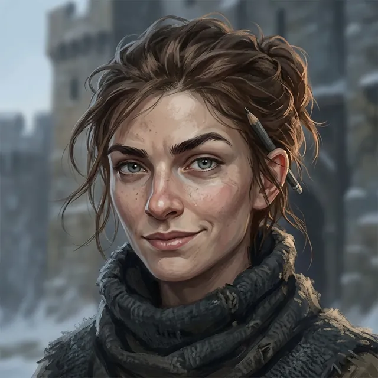

Wren Ashdown
Ledger-keeper of Saint Ysolde's
Only what the story has shown so far.
Appearance
About twenty, wiry and sharp-faced, with grey eyes under thick dark brows, a dusting of freckles across her nose and cheeks, and a sly half-smile that usually means she is about to correct you. Her brown hair is twisted up out of the way and keeps coming loose in strands, with a pencil stuck behind her ear; in the cold she buries her chin in a thick dark wool scarf, and she hugs her ledger to her chest like a shield. She talks fast and irreverently, with a number in every third sentence and a 'technically' ready whenever she is about to disagree with you.
Now
Last seen Chapter 4 · Between — Three Answers · Saint Ysolde's
On the floor by the brazier with the ledger shut on her finger. She has shown the Captain how a letter down could work and asked him what it costs if caught.
Story so far
She went first with the lamp both times and counted the stair both ways. Over the inner door she read the old hand aloud before the Mender could, and stopped halfway, and has read nothing since. Her tally had the satchel coming up heavier than it went down; she found the kitchen's pry bar off its hook; she carried the lid of mortar up and set it down like an egg. She has the alcove, the bar and the hole under nothing in her ledger.
Quote
Next time you mean to be brave, tell me first. So I don't run.
Relationships
- Toward Darrowwarming
- Ser Darrow of Edgemoorthe captain she counted up the Steps
She counted the Steps aloud beside his litter the day he was carried up, keeps a tally of every time he has asked to go down them, and when Hollis asked who was first on the Confessors' list, she looked at Darrow instead of answering.
- Maelis VorneMender Vorne
Wren claims Maelis says her saying in her sleep; Maelis says she does not sleep and that Wren lies, and Wren calls it embellishing.
- Ser Hollis Garrowthe second name on the list
She was the one who told him he was second on the list the Confessors read out in Coldmere.
- Rae Thornethe carter whose news she ran down to the hall
It was Rae who heard the list read at Coldmere and climbed through the night with it; Wren carried it the last of the way, from the winch-brothers and the kitchen to the infirmary hall.
The Reckoning
Level 3 · Bound
Ember faint
Arts The Long Breath II
Deeper ⟦ unread ⟧
Read with Warden's Eye III. Stronger sight reads deeper. The ranks of the Ember run Bound · Kindled · Tempered and up; Oathsworn is borrowed strength.
Known facts
What the page has shown (80)
- She walked beside Darrow's litter up the Thousand Steps counting the steps aloud, and did not stop until the top.Prologue · II — The Steps
- By her count there are eleven hundred and seventeen Steps, not a thousand, and she holds that everyone who says a thousand is wrong.Prologue · II — The Steps
- When Darrow, feverish on the litter, told her she had missed a step, she denied it and went on counting.Prologue · II — The Steps
- On the night of the Binding, when the bells rang the hour, she was somewhere in the House counting them.Prologue · III — The Binding
- Her ledger entry at the head of Chapter 1 records the Steps, the cots and how many are full, the day's bells, and the number of times the captain of the Ninth has asked to go down the Steps against the number of times Mender Vorne has refused him.Chapter 1 · Scene 1 — The Reading of the Knots
- She told Darrow that Maelis says 'Time makes it possible, proof makes it permitted' in her sleep; Maelis says she does not sleep and that Wren lies, which Wren calls embellishing.Chapter 1 · Scene 1 — The Reading of the Knots
- She came to the infirmary from the bell tower, where Sister Pell's glass had shown riders on the Holloway.Chapter 1 · Scene 1 — The Reading of the Knots
- She brought the infirmary hall the news of six grey-cloaked riders and a cart on the Holloway, with a censer smoking in the snow, expected at the foot of the Steps by tomorrow night if the snow holds off.Chapter 1 · Scene 1 — The Reading of the Knots
- She knows who stands second on the list of the Faithless at Saint Ysolde's that was read out at the inn in Coldmere: Hollis. When he asked who was first, she answered only by looking at Darrow.Chapter 1 · Scene 1 — The Reading of the Knots
- She brought word that Rae Thorne had heard the list read in the taproom at Coldmere, driven the Holloway in the dark ahead of the grey cloaks, and climbed the Steps before the bell to tell the winch-brothers.Chapter 1 · Scene 1 — The Reading of the Knots
- Her ledger at the head of Chapter 1 also counts one cart at the winch-house, Thorne's, and one load waiting on the cage.Chapter 1 · Scene 1 — The Reading of the Knots
- Bringing the news of the list, she said the named would be taken down the Steps, down the Holloway, all the way to the Oathspire, to kneel in front of whoever turns out to watch.Chapter 1 · Scene 1 — The Reading of the Knots
- Sister Pell lent her the glass counted out, one glass, two caps and one strap, to be counted back by the next bell.Chapter 1 · Scene 4 — Boots on the Board
- From the gate wall at noon she counted six riders, one cart and one censer, with one of the six already off the road: three bells early, because the snow held off.Chapter 1 · Scene 4 — Boots on the Board
- When the five came in at the winch-house she lowered the glass and, for once, had no number for it.Chapter 1 · Scene 4 — Boots on the Board
- In the court she stood at Darrow's left with her ledger against her chest and no pencil behind her ear, because she was not there to count; when his name was read her hand closed on his sleeve and stayed there.Chapter 1 · Climax — The Law of Names
- At 'Wren. Now.' she was gone along the inner wall toward the tower before the word was finished, and the ledger went with her.Chapter 1 · Climax — The Law of Names
- She came back from the tower with Pell's slowness in her face and took her place at Darrow's left again, and for the second time that day had no number for a thing.Chapter 1 · Climax — The Law of Names
- When Darrow had given his name at the bars she said, at his elbow and not looking at him, that technically he had been hidden, for about as long as it takes to count to eleven; she was counting the grey cloaks round the first fire on the terrace.Chapter 1 · The choice — Darrow of Edgemoor
- On the wall-walk she counted the grey cloaks for him, five round the fire and one at the winch-house, and told him that among eleven wounded men and him he had been one in twelve, and now he was one in one.Chapter 2 · Between — The Count
- She says it is a hundred and twelve paces from the gatehouse stair to the tower door, and she ran them so the bell would ring before anyone found him.Chapter 2 · Between — The Count
- She made him count the hall's lamps while she told him how stupid giving his name had been, a chit if he lost the count; he kept it, and her lips moved along the windows and stopped where his had.Chapter 2 · Between — The Count
- She told him to tell her first, next time he means to be brave, so she doesn't run; when he said he would, she said he wouldn't, and wrote in her ledger: Times the Captain has promised to tell me first: 1.Chapter 2 · Between — The Count
- Maelis has her count the Captain's steps and read the number to her at every bell.Chapter 2 · Scene 3 — Nobody Passed
- She counts the Prior's keys every morning; her count for the night Benedek was taken: both doors into the hall barred at the night bell and still barred at the feast's dawn bell, and all nine keys hanging where they hang.Chapter 2 · Scene 3 — Nobody Passed
- She would not look at the Grey Cot, and went on the Captain's errand without arguing it.Chapter 2 · Scene 3 — Nobody Passed
- No writ names a carter, and the bell lets anybody down; coming back up is eleven hundred and seventeen steps.Chapter 2 · Scene 4 — The Last Hundred
- She has watched Rae on the Steps: Rae never counts them, she takes them like a road.Chapter 2 · Scene 4 — The Last Hundred
- When the grey cloak got down off the cart for Rae, Wren said so and did not write it down.Chapter 2 · Scene 4 — The Last Hundred
- This time she wrote it down: one letter to the Captain of the Ninth, burned.Chapter 2 · Scene 5 — Come Home, Brother
- She said there would be another letter, there was always another.Chapter 2 · Scene 5 — Come Home, Brother
- She alone followed the Captain's eyes to the wall, and at dusk asked him, low, to show her where.Chapter 2 · Scene 6 — Which of Us
- She found the seam by touch: every wall in the House sweats, she says, and she has counted them; this one is cold.Chapter 2 · Between — Told First
- She counted the seam along three cots to the head of the Grey Cot.Chapter 2 · Between — Told First
- Past the third cot the cold went on under her palm toward the dark end of the wall.Chapter 2 · Between — Told First
- Told first what the Captain means to do, she counted it: one.Chapter 2 · Between — Told First
- Her candle's flame bent at the third cot and leaned toward the dark end of the wall, and lay flat toward the gap under the undercroft door.Chapter 2 · Scene 7 — The Door Below
- She named the door: the undercroft, the stair down, shut since before she could count.Chapter 2 · Scene 7 — The Door Below
- Sent to bed by the Prior, she corrected her count of the doors into the hall from two to three.Chapter 2 · Scene 7 — The Door Below
- Her count fixed the hour the lad was taken: eight bells rung between the night bell and the dawn bell, his oath said at three, so between the third bell and the fourth.Chapter 2 · Climax — The Fourth Bell
- Before the whole House her candle's flame bent at the third cot and lay flat toward the gap under the undercroft door.Chapter 2 · Climax — The Fourth Bell
- She offered to go down the stair herself: she is light and can count steps in the dark.Chapter 2 · Climax — The Fourth Bell
- Seeing the Prior's key on its cord, she counted again: nine keys on the ring, ten on the Prior.Chapter 2 · Climax — The Fourth Bell
- Asked whether she would take his weight, she said half of it, and that it is better than a hole.Chapter 2 · The choice — Her Count
- She told him the kitchen has been calling him the Kinsman since tonight; she heard it four times while the House went up to bed.Chapter 2 · The choice — Her Count
- She counted no prints into the flour and none out, and frost.Chapter 3 · Scene 1 — The Flour
- She says the seam on the wall sweats every dawn she has looked, so this is not new: only the first night anyone sat up with it.Chapter 3 · Scene 1 — The Flour
- She has started a ledger page counting the times the Captain has asked the Mender, with a great deal of room under it.Chapter 3 · Scene 1 — The Flour
- She counted the letters to the Captain of the Ninth at three, and said it so she would not be the only one who had.Chapter 3 · Scene 2 — Blue Wax
- She counted riders far down the Holloway at about twenty.Chapter 3 · Scene 3 — Nine Down
- Their banner is not grey; she could tell no more at that distance.Chapter 3 · Scene 3 — Nine Down
- She went first down the undercroft stair with the lamp.Chapter 3 · Scene 3 — Nine Down
- She says everybody in the House wants to know what her counts mean, and the Captain wants the count itself; she calls that liking an audience.Chapter 3 · Between — Room Under It
- She asked the Captain to come back up the undercroft stair.Chapter 3 · Between — Room Under It
- She keeps a count of the times the Captain has said a decent thing on a stair: one, with room under it.Chapter 3 · Between — Room Under It
- She read the first half of the words over the undercroft's inner door aloud, straight off, and stopped.Chapter 3 · Scene 4 — What Is Given
- She counted the undercroft stair the same down and up, and called it a clean page.Chapter 3 · Scene 4 — What Is Given
- She held the lamp for the Captain at the painted wall and did not read the strokes there.Chapter 3 · Scene 4 — What Is Given
- She wrote nothing in her ledger for what was over the door.Chapter 3 · Scene 4 — What Is Given
- Her tally has the almoner's satchel coming up heavier than it went down; she wrote letters, with a mark after it because she did not believe it.Chapter 3 · Scene 5 — Like a Stone
- She counted the cage the grey cloaks had inspected three jars of lamp oil short, and the salt opened.Chapter 3 · Scene 5 — Like a Stone
- She did not write down what Rae said of the grey mare.Chapter 3 · Scene 5 — Like a Stone
- She walked under the undercroft's inner lintel with her eyes on the floor and did not lift the lamp to it.Chapter 3 · Scene 6 — New Mortar
- She counts doors with no handle: one.Chapter 3 · Scene 6 — New Mortar
- She wrote two lines and one more word about the alcove and put them under nothing, at the Captain's word.Chapter 3 · Scene 6 — New Mortar
- She found the kitchen's pry bar off its hook, behind the flour bins on the floor, and the cook says nobody has had it.Chapter 3 · Scene 7 — The Bar
- She wrote the pry bar's wrong place in her ledger, under nothing.Chapter 3 · Scene 7 — The Bar
- She offered to work the bar herself, having two good knees and no face anyone was watching.Chapter 3 · Scene 7 — The Bar
- She began to say that the almoner takes the letters down, and stopped when he said not down here.Chapter 3 · Climax — What Was Carried
- She carried the slab of mortar up and set it on the linen press as carefully as an egg.Chapter 3 · Climax — What Was Carried
- She caught the lock of hair before it reached the flags.Chapter 4 · Scene 2 — Her Hand
- She counted the grey hound's bites: two lay brothers and the farrier, who says he has never been bitten by anything in his life.Chapter 4 · Scene 3 — The Ramp
- She brought the Captain to the hound because they have something in common: a splint on a back leg.Chapter 4 · Scene 3 — The Ramp
- She told him the kennel ramp was built so that a dog with a bad leg could be got up it.Chapter 4 · Scene 3 — The Ramp
- She counted the Captain's decent word on the ramp: a ramp does not count as a stair, but it can go in the room under the one.Chapter 4 · Scene 3 — The Ramp
- She counted the Captain's bitten hand as the hound's fourth bite.Chapter 4 · Scene 3 — The Ramp
- She counted five grey cloaks' fires on the lower terrace where there have always been six, and saw one of them go down the Steps before the dusk bell with a horse.Chapter 4 · Scene 4 — The Price
- She says the grey cloaks read every letter up and down at the winch-house now, which is what inspected means.Chapter 4 · Between — Three Answers
- She says a letter down need not be a lie if it is in the almoner's hand and his words and one he would write: frightened, sorry, asking what to do next.Chapter 4 · Between — Three Answers
- She named Rae, if she is up, as the one to take a letter down.Chapter 4 · Between — Three Answers
Appearances
29 scenes · named in 8- Prologue — The Three Heartbeats
- Chapter 1 — The Confessor at the Steps
- Chapter 2 — The Grey Cot
- Between — The Count
- Scene 3 — Nobody Passed
- Scene 4 — The Last Hundred
- Interlude — The Carter named
- Between — Against the Ovens named
- Between — Name the Load
- Scene 5 — Come Home, Brother
- Scene 6 — Which of Us
- Between — Told First
- Between — Whose Hand named
- Scene 7 — The Door Below
- Climax — The Fourth Bell
- The choice — Her Count
- Chapter 3 — The Undercroft
- Chapter 4 — Old Mercy